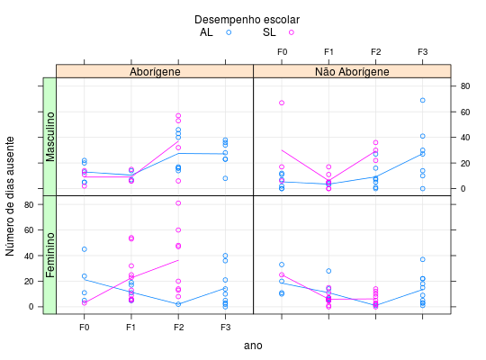

Dados provenientes de um estudo sociológico desenvolvido na Austrália com 146 estudantes de 8ª série e ensino médio. Nesse estudo avaliou-se a ausência escolar (contagem de dias ausentes) com o objetivo de avaliar sua relaçao com etnia, sexo, ano que o aluno está cursando e desempenho escolar.
Um data.frame com 146 observações e 5 variáveis.
etniasexoanodesempndiasPAULA (2004), Exemplo 4.3.6, pág. 312.
Venables, W. N., Ripley, B. D. (1999). Modern Applied Statistics with S-Plus (3rd ed.). Springer, New York.
data(PaulaEg4.3.6)#> Warning: data set ‘PaulaEg4.3.6’ not foundstr(PaulaEg4.3.6)#> 'data.frame': 146 obs. of 5 variables: #> $ etnia : Factor w/ 2 levels "A","N": 1 1 1 1 1 1 1 1 1 1 ... #> $ sexo : Factor w/ 2 levels "F","M": 2 2 2 2 2 2 2 2 2 2 ... #> $ ano : Factor w/ 4 levels "F0","F1","F2",..: 1 1 1 1 1 1 1 1 2 2 ... #> $ desemp: Factor w/ 2 levels "AL","SL": 2 2 2 1 1 1 1 1 2 2 ... #> $ ndias : int 2 11 14 5 5 13 20 22 6 6 ...# Número de observações em cada combinação. Para modelagem não será # possível a estimação de algumas interações ftable(PaulaEg4.3.6[, -5])#> desemp AL SL #> etnia sexo ano #> A F F0 4 1 #> F1 5 10 #> F2 1 8 #> F3 9 0 #> M F0 5 3 #> F1 2 3 #> F2 7 4 #> F3 7 0 #> N F F0 4 1 #> F1 6 11 #> F2 1 9 #> F3 10 0 #> M F0 6 3 #> F1 2 7 #> F2 7 3 #> F3 7 0# Ausência escolar seccionadas pelas variáveis explicativas xtabs(ndias ~ ., data = PaulaEg4.3.6)#> , , ano = F0, desemp = AL #> #> sexo #> etnia F M #> A 85 65 #> N 74 32 #> #> , , ano = F1, desemp = AL #> #> sexo #> etnia F M #> A 57 21 #> N 66 7 #> #> , , ano = F2, desemp = AL #> #> sexo #> etnia F M #> A 2 192 #> N 1 64 #> #> , , ano = F3, desemp = AL #> #> sexo #> etnia F M #> A 131 190 #> N 135 191 #> #> , , ano = F0, desemp = SL #> #> sexo #> etnia F M #> A 3 27 #> N 25 90 #> #> , , ano = F1, desemp = SL #> #> sexo #> etnia F M #> A 226 27 #> N 66 43 #> #> , , ano = F2, desemp = SL #> #> sexo #> etnia F M #> A 291 148 #> N 56 88 #> #> , , ano = F3, desemp = SL #> #> sexo #> etnia F M #> A 0 0 #> N 0 0 #># Relação média-variância aggregate(ndias ~ ., FUN = function(x) c(mean(x), var(x)), data = PaulaEg4.3.6)#> etnia sexo ano desemp ndias.1 ndias.2 #> 1 A F F0 AL 21.250000 313.583333 #> 2 N F F0 AL 18.500000 113.666667 #> 3 A M F0 AL 13.000000 64.500000 #> 4 N M F0 AL 5.333333 29.466667 #> 5 A F F1 AL 11.400000 42.800000 #> 6 N F F1 AL 11.000000 80.000000 #> 7 A M F1 AL 10.500000 24.500000 #> 8 N M F1 AL 3.500000 0.500000 #> 9 A F F2 AL 2.000000 NA #> 10 N F F2 AL 1.000000 NA #> 11 A M F2 AL 27.428571 215.952381 #> 12 N M F2 AL 9.142857 89.809524 #> 13 A F F3 AL 14.555556 220.527778 #> 14 N F F3 AL 13.500000 132.055556 #> 15 A M F3 AL 27.142857 107.476190 #> 16 N M F3 AL 27.285714 525.904762 #> 17 A F F0 SL 3.000000 NA #> 18 N F F0 SL 25.000000 NA #> 19 A M F0 SL 9.000000 39.000000 #> 20 N M F0 SL 30.000000 1057.000000 #> 21 A F F1 SL 22.600000 349.155556 #> 22 N F F1 SL 6.000000 17.400000 #> 23 A M F1 SL 9.000000 27.000000 #> 24 N M F1 SL 6.142857 36.809524 #> 25 A F F2 SL 36.375000 702.553571 #> 26 N F F2 SL 6.222222 24.694444 #> 27 A M F2 SL 37.000000 547.333333 #> 28 N M F2 SL 29.333333 49.333333library(latticeExtra) fl1 <- c("Aborígene", "Não Aborígene") fl2 <- c("Feminino", "Masculino") useOuterStrips( xyplot(ndias ~ ano | etnia + sexo, groups = desemp, data = PaulaEg4.3.6, type = c("p", "a", "g"), ylab = "Número de dias ausente", auto.key = list( columns = 2, cex.title = 1, title = "Desempenho escolar")), strip = strip.custom(factor.levels = fl1), strip.left = strip.custom(factor.levels = fl2))